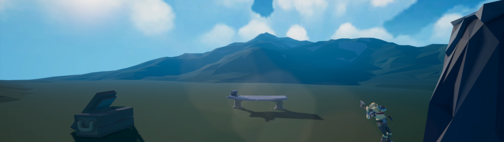

Goal-Oriented Action Planning
This Unity project contains a solution for Goal-Oriented Action Planning AI. It was developed within the scope of a bachelor thesis. The project proposes general algorithmic changes to the algorithm of GOAP to improve the overall performance of the system. It further compares the differences between a natively compiled GOAP solution and one that uses the job system contained in the Unity ECS.
Goal-Oriented Action Planning introduces world states and goals as well as a precondition-effect schema to „generate“ procedural finite state machines at runtime through the use of the A* algorithm.
Example of a plan using the proposed backward planning model. Left to Right (Planning order), Right to Left (Execution order)Overview of features (Standard Solution)
| Feature | Description |
|---|---|
| Plan validation | Used for replanning and general problem solving. |
| Goal and world state prioritization | In a recursive goal search the algorithm selects the highest priority goal for which a plan can be found. |
| Goal and action validation | Before planning, the system rules out goals that are not valid and actions that cannot be executed. |
| Dynamic action costs | Calculates the cost of an action whenever a plan is requested. |
| Modified backward planning model | Improves the overall performance of the algorithm as shown in the figure above. |
| Generic world state design | The collection of variables stored in a world state is generic. |
Example simulation
The visual assets contained within the scene are developed by third party.
To the project:
GitHub Link